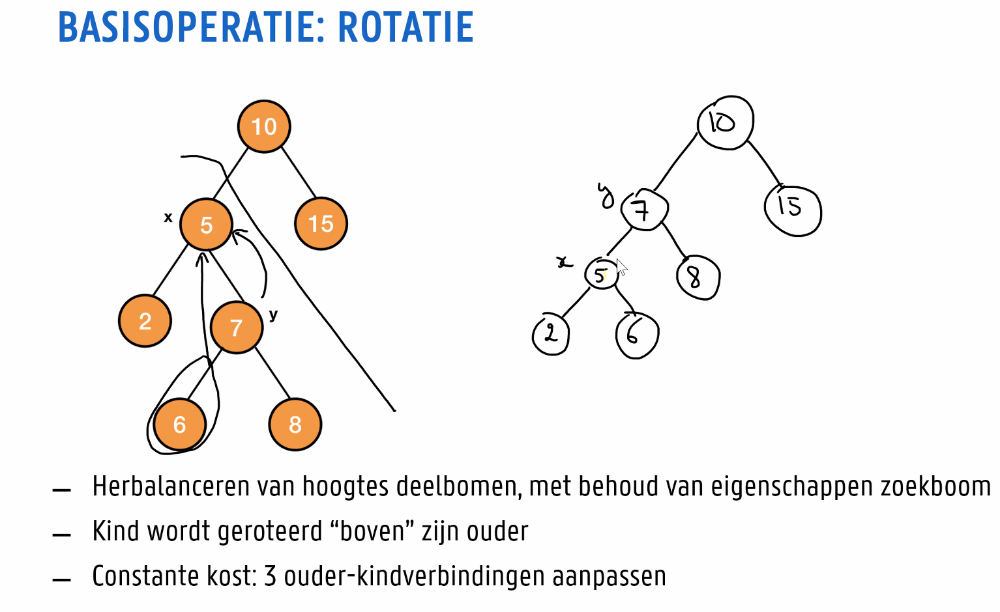
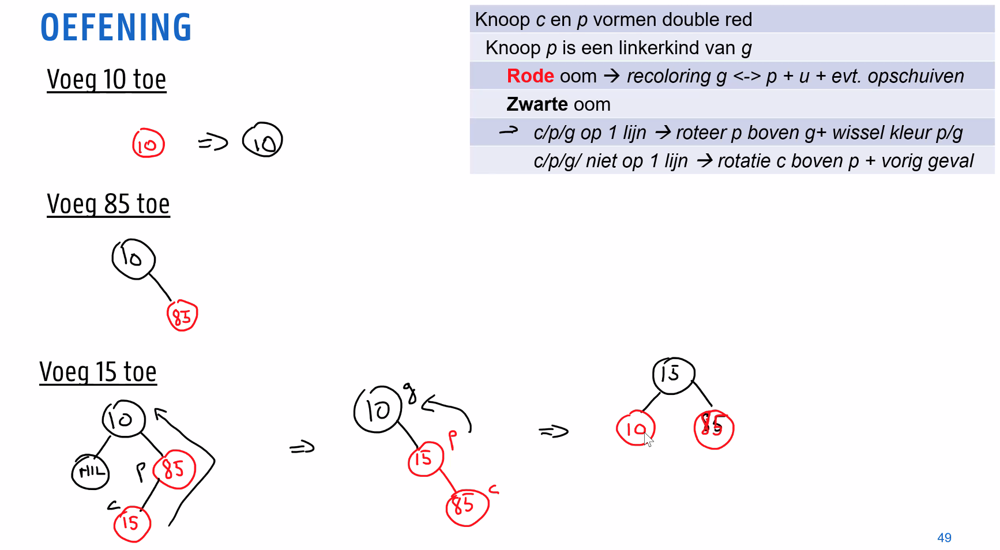
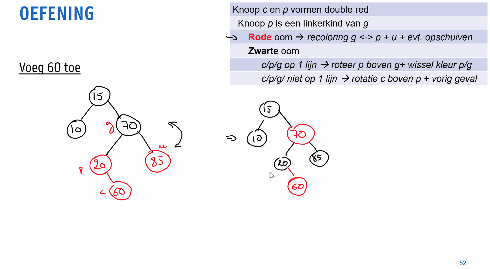

Algoritmen
Evenwichtige zoekbomen
We willen ervoor zorgen dat bomen niet uit balans geraken:
- Red-black-tree: boom altijd herbalanceren
- Splay trees: maakt reeks opeenvolgende operaties efficient
- Treaps: tree die ook een heap is (gaan we niet verder op in)
Red-black tree

Binaire zoekboom, waarvoor geldt:
- Elke knoop is rood of zwart
- De wortel is zwart
- Elke virtuele knoop (NIL) is zwart
- Elke rode knoop heeft 2 zwarte kinderen
- Elk pad van een knoop naar een bladnode in zijn deelboom bevat eenzelfde aantal zwarte knopen
We definiëren het begrip zwarte hoogte als het aantal zwarte knopen op het pad naar een bladnode.
We willen bewijzen dat een red-black tree met wortel


Zoeken
Zelfde als bij BST, we houden geen rekening met de kleur, dus
Toevoegen
We gaan dus altijd toevoegen als rode knoop. Omdat we dan de zwarte hoogte van de boom niet super hard verkloten. We moeten dan gaan roteren om de boom terug geldig te krijgen.

Kind roteren naar bover zijn ouder, deelboom van het kind wordt de deelboom van de voormalige ouder. De kost van één rotatie is
Om de boom te fixen, kunnen we ook recoloren. We moeten dit doen wanneer een rode knoop rode kinderen heeft na een toevoegoperatie (double red).




Labo's
Red black trees
De oplossingen staan online, maar ik wou hier toch even iets kleins toevoegen. De contains() wordt in de oplossing recursief opgelost, maar het kan ook iteratief.
bool RedBlackTree::contains(int key){ // Kan blijkbaar ook recursief if (root == NULL) { return false; } else { Node* current = root.get(); while (true) { if (current->key == key) { return true; } else if (current->key < key) { if (current->rightChild) { current = current->rightChild.get(); } else { return false; } } else { if (current->leftChild) { current = current->leftChild.get(); } else { return false; } } } }}Ik had de getHeight() ook een beetje anders gedaan (een beetje slechter denk ik). Misschien heb je er iets aan.
xint RedBlackTree::getHeight(){ return getHeight(root.get());}int RedBlackTree::getHeight(Node* node){ if (node == NULL) { return 0; } int left = 0; int right = 0; if (node->leftChild) { left = getHeight(node->leftChild.get()) + 1; } if (node->rightChild) { right = getHeight(node->rightChild.get()) + 1; }
return left > right ? left : right;}
Decrease and conquer
Redelijk straightforward, maar ik heb wel één leuk fenomeen ondervonden:
De eerste manier runde echt zeker 10 keer trager dan de tweede.
xxxxxxxxxxfor (auto& testPoint : testData) {
// TODO calculate error for this testpoint ! double error; updateDistance(testPoint, trainingData); location estimate = kNN_location(trainingData, 10); error = euclideanDistance(testPoint, estimate);
errors[nrTestPoint++] = error;
std::cout << nrTestPoint << ". Error: " << error << " m" << std::endl; }for (auto& testPoint : testData) {
// TODO calculate error for this testpoint ! double error; updateDistance(testPoint, trainingData); std::shuffle(trainingData.begin(), trainingData.end(), rng); location estimate = kNN_location(trainingData, 10); error = euclideanDistance(testPoint, estimate);
errors[nrTestPoint++] = error;
std::cout << nrTestPoint << ". Error: " << error << " m" << std::endl; }Hoe zou dat komen? 😉
Divide and conquer
Ik heb het een klein beetje anders gedaan dan in de oplossing, moest iemand geïnteresseerd zijn.
template <class T>T sortedVectorMedian(std::vector<T>& v){ std::sort(v.begin(), v.end(), [](T a, T b) -> bool { return a < b; }); if (v.size() % 2 == 0) { return (v[v.size() / 2 - 1] + v[v.size() / 2]) / 2; } else return v[v.size() / 2];}
template <class T>T sortedVectorMedianOffset(std::vector<T>& v, int offset, int n){ if (n % 2 == 0) { return (v[n / 2 - 1 + offset] + v[n / 2 + offset]) / 2; } else return v[n / 2 + offset];}
template <class T>T M3(T a, T b, T c){ return a < b ? (a < c ? (b < c ? b : c) : (a < b ? a : b)) : (b < c ? (a < c ? a : c) : (a < b ? a : b));}template <class T>T M4(T a, T b, T c, T d){ T max = std::max(std::max(a, b), std::max(c, d)); T min = std::min(std::min(a, b), std::min(c, d));
return (a + b + c + d - max - min) / 2.0f;}
template <class T>void printVector(std::vector<T>& v, int offset, int n){ std::cerr << "["; for (int i = 0; i < n; i++) { std::cerr << v[i + offset] << ", "; }
std::cerr << "]\n";}
template <class T>T getMedian(std::vector<T>& branchA, int a_offset, int a_n, std::vector<T>& branchB, int b_offset, int b_n){ T median_a = sortedVectorMedianOffset<T>(branchA, a_offset, a_n); T median_b = sortedVectorMedianOffset<T>(branchB, b_offset, b_n); if (median_a == median_b) { return median_a; } if (a_n == 0) { return median_b; } if (a_n == 1) { T a = branchA[a_offset]; T b0 = branchB[b_offset + b_n / 2 - 1]; T b1 = branchB[b_offset + b_n / 2]; T b2 = branchB[b_offset + b_n / 2 + 1]; if (b_n % 2 == 0) {
return M3(a, b0, b1); } else { return M4(a, b0, b1, b2); } } if (a_n == 2) { T a1 = branchA[a_offset]; T a2 = branchA[a_offset + 1]; T b0 = branchB[b_offset + b_n / 2 - 2]; T b1 = branchB[b_offset + b_n / 2 - 1]; T b2 = branchB[b_offset + b_n / 2]; T b3 = branchB[b_offset + b_n / 2 + 1]; if (b_n % 2 == 0) { if (a2 < b0) { return (b0 + b1) / 2; } if (a1 > b3) { return (b2 + b3) / 2; } else { return M4(a1, a2, b1, b2); } } else { return M3(a1, a2, b2); } } else {
if (median_a < median_b) { return getMedian(branchA, a_offset + a_n / 2, a_n - (a_n / 2), branchB, b_offset, b_n - (a_n / 2)); } else { return getMedian(branchA, a_offset, a_n - (a_n / 2), branchB, b_offset + (a_n / 2), b_n - (a_n / 2)); } }}
template <class T>T getMedian(std::vector<T>& branchA, std::vector<T>& branchB){ if (branchA.size() < branchB.size()) { return getMedian(branchA, 0, branchA.size(), branchB, 0, branchB.size()); } else { return getMedian(branchB, 0, branchB.size(), branchA, 0, branchA.size()); }}
Ik heb de testklasse ook wat uitgebreid, want die van de lectoren was wel echt matig. Die van mij maakt twee random arrays, met elke keer andere waarden, dus dan kan je deftig je code testen. Ik zou ook de lengtes van de vectoren aanpassen wanneer je je code test.
xxxxxxxxxxTEST_CASE("Final median wage test", "[MedianWage]"){ srand(time(NULL));
std::vector<float> branchAf = { 3, 7, 8, 9, 12, 30, 40, 65 }; std::vector<float> branchBf = { 5, 8, 10, 20, 32, 64 };
float median = getMedian<float>(branchAf, branchBf);
// Generate 10 random numbers by lambda func and fill it in vector std::vector<float> vec_a(23); std::generate(vec_a.begin(), vec_a.end(), []() { return rand() % 100; }); std::sort(vec_a.begin(), vec_a.end());
std::vector<float> vec_b(22); std::generate(vec_b.begin(), vec_b.end(), []() { return rand() % 100; }); std::sort(vec_b.begin(), vec_b.end());
float median2 = getMedian<float>(vec_a, vec_b); vec_a.insert(vec_a.end(), vec_b.begin(), vec_b.end()); std::sort(vec_a.begin(), vec_a.end()); float computed_median = sortedVectorMedian(vec_a);
REQUIRE(median == 11.0f); REQUIRE(median2 == computed_median);}
Nuttige dingen voor de test
nth-element
std::nth_element sorteer je lijst gedeeltelijk zodat het n-de element zeker op de juiste plaats staat. Alle elementen die voor het n-de element staan zullen kleiner zijn en alle elementen erna groter.
xxxxxxxxxxauto m = v.begin() + v.size()/2; std::nth_element(v.begin(), m, v.end()); // je moet dus 3 iterators meegeven (begin, n-de element, einde)
// je kan als vierde element ook een (lambda) functie meegeven std::nth_element(colors.begin(), half, colors.end(), [&dim](Color a, Color b) { return a.compareDim(a, dim, b); });
// want in dit labo kon je niet zomaar kleuren vergelijken met de "<" operator.
minmax_element
std::minmax_element geeft een paar van iterators terug, de eerste wijst naar het kleinste, en de tweede naar het grootste element in de range.
const auto v = { 3, 9, 1, 4, 2, 5, 9 };const auto [min, max] = std::minmax_element(begin(v), end(v));
transform
std::transform past een functie toe op elk element van een range (niet gegarandeerd in volgorde geloof ik)
xxxxxxxxxx// we maken alle letters uppercasestd::string s("hello");std::transform(s.begin(), s.end(), s.begin(), [](unsigned char c) -> unsigned char { return std::toupper(c); });
// We steken alle keys van een map in een vectormap<int, string> m = { {1,"foo"}, {42, "bar"}, {7, "baz"} };vector<int> keys;std::transform(m.begin(), m.end(), std::back_inserter(keys), getFirst);// back_inserter is een output iterator die ook een push_back doet in de array die je eraan meegeeft
accumulate
je kan std::accumulate gebruiken om bijvoorbeeld het gemiddelde van een vector te berekenen
double avg1(std::vector<int> const& v) { return 1.0 * std::accumulate(v.begin(), v.end(), 0LL) / v.size();}// deze is wel voor als je met hele grote getallen werkt, het kan ook simpeler
vector splitsen
Je kan de constructor van een vector twee iterators meegeven (begin, einde). De elementen van begin tot einde worden dan naar de nieuwe vector gekopieerd. Dit kan van pas komen als je recursief een boom moet opbouwen.
std::vector<int> lines;// fillstd::size_t const half_size = lines.size() / 2;std::vector<int> links(lines.begin(), lines.begin() + half_size);std::vector<int> rechts(lines.begin() + half_size, lines.end());
swap
Om twee elementen te wisselen.
std::swap(v[0],v[1]);
vectoren samenvoegen
vector1.insert( vector1.end(), vector2.begin(), vector2.end() );